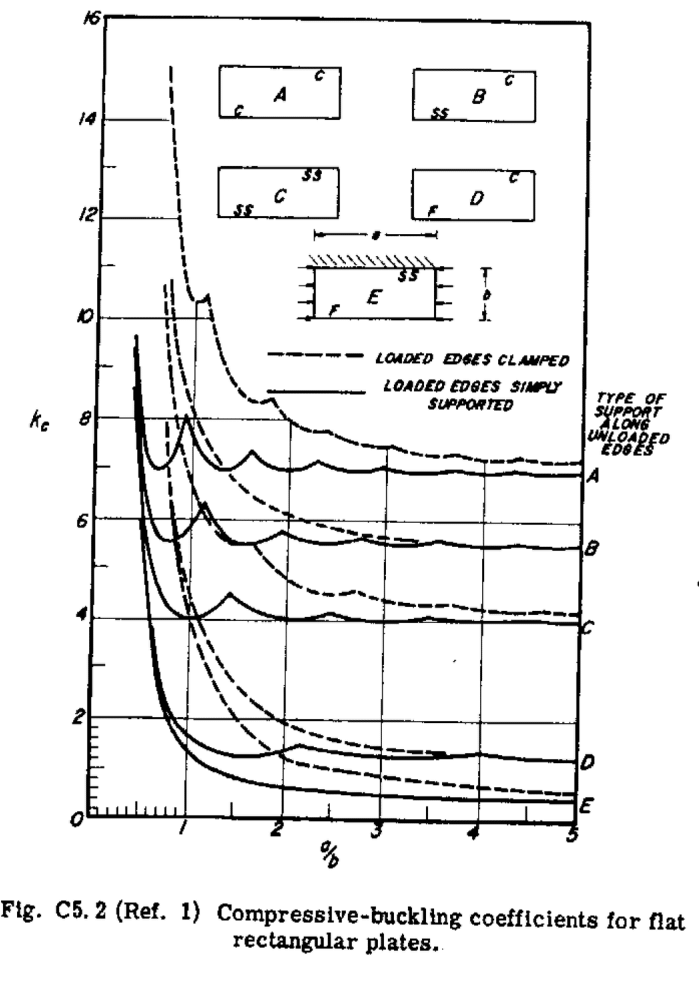
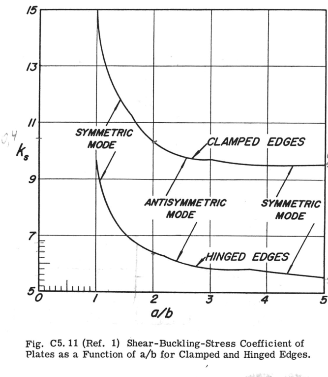

Structures constraints Documentation#
- class tuduam.structures.constraints.IsotropicWingboxConstraints(wingbox: IdealWingbox, material_struct: Material, len_to_rib: float)[source]#
Bases:
objectClass to handle constraints on an isotropic wingbox structure.
- Parameters:
- wingboxIdealWingbox
The wingbox structure for which constraints are evaluated.
- material_structMaterial
the material properties of the wingbox structure.
- len_to_ribfloat
the length between ribs in the wingbox structure.
- Attributes:
- pnl_lstlist
list of panels in the wingbox.
- tens_pnl_idxlist
indices of panels which are in tension.
- t_stfloat
thickness of the stringer.
- w_stfloat
width of the stringer.
- h_stfloat
height of the stringer.
- area_strfloat
area of the stringer.
- kb_splinecubicspline
interpolator for critical shear function.
- _kb_interp(ar_lst: list) ndarray[source]#
computes the coefficients for the critical shear stability of a sheet.
- Parameters:
- ar_lstlist
list containing the aspect ratio of each sheet.
- Returns:
- np.ndarray
an array with the critical shear coefficients.
- _n_col() ndarray[source]#
The critical distributed compressive load acting on all stringers is computed in Equation 50, this approach being also conservative, given that in reality the skin beneath the stringer takes part of the compression load.
\[N_{col} = \frac{\pi^2 E I}{L^2 2 w_{st}}\]- Returns:
- np.ndarray
The critical distributed compressive load acting on all stringers in N/m.
- column_str_buckling() list[source]#
The following constraints ensure that local skin buckling occurs before column stringer buckling, which makes failure of the structure more predictable. In order to be able to compare it to the skin buckling load, the critical distributed compressive load acting on all stringers is computed in Equation 50. This approach is also conservative, given that in reality the skin beneath the stringer takes part of the compression load. The constraint is expressed below as well.
\[N_{col} = \frac{\pi^2 E I}{L^2 2 w_{st}}\]\[N_{col} - \sigma_{cr} t_{sk} \geq 0\]- Returns:
- list
A list of constraints ensuring local skin buckling occurs before column stringer buckling.
- crippling() ndarray[source]#
Crippling is a form of local buckling that occurs in columns, leading to the failure of the structure. It is related to plastic deformation of the stringer, and it is desired to have the load higher than the column buckling of the stringers (and subsequently higher than the local skin buckling), as crippling leads to the entire failure of the structure. The crippling load is expressed in Equation 56 (in N/m), where for aluminium alloys the constants are β=1.42, m=0.85, and for Z stringers g=5 [4]. The constraint is stated in Equation 57.
\[N_f = t_{st} \beta \sigma_y \left[\frac{g t_{st}^2}{A_{st}} \sqrt{\frac{E}{\sigma_y}} \right]^m\]- Returns:
- np.ndarray
An array containing the inequality constraints described above, where each element represents a panel. The elements should be greater than zero to satisfy the constraint.
- crit_instability_compr() list[source]#
compute the elastic instability of a flat sheet in compression for each panel in the idealized wingbox using the equation shown below.
\[\sigma_{cr} = k_c \frac{\pi^2 e}{12(1 - \nu^2)} \left(\frac{t_{sk}}{b}\right)^2\]where b is the short dimension of the plate or loaded edge. for \(k_c\), a value of 4 was chosen. please see the figure below for the reasoning. since all edges are considered simply supported from either the stringer or the ribs, it is conservative to go for a value of 4. for any other information please see source 1.
future improvements 1. compute the proper buckling coefficient in real time using the sheet aspect ratio (or just check for aspect ratios smaller than 1. these seem to be the most relevant to catch). 2. a plasticity factor could be implemented (see source 1, equation c5.2).
bibliography
chapter c5.2, bruhn, analysis & design of flight vehicle structures
- Parameters:
- wingboxidealwingbox
ideal wingbox class which is utilized to create constraints per panel.
- material_structmaterial
data structure containing all material properties.
- len_to_ribfloat
the distance to the next rib.
- Returns:
- float
the critical buckling stress due to compression.
- crit_instability_shear() list[source]#
compute the elastic instability of a flat sheet in shear for each panel in the idealized wingbox using the equation shown below. this is very similar to the case in compression (see
crit_instability_compr()) except for the shear buckling coefficient.\[\sigma_{cr} = k_b \frac{\pi^2 e}{12(1 - \nu^2)} \left(\frac{t_{sk}}{b}\right)^2\]where b is the short dimension of the plate or loaded edge. for \(k_b\), the shear buckling coefficient, the figure below was used to make a polynomial fit of the 3rd degree. the dataset used was as follows:
x = [1. , 1.5, 2. , 2.5, 3. , 3.5, 4. , 4.5, 5. ] y = [9.5, 7.2, 6.4, 6, 5.8, 5.9, 5.8, 5.6, 5.4]
the interpolator was created in the initialization of the class. for any other information please see source 1.
future improvements 1. a plasticity factor could be implemented (see source 1, equation c5.2).
bibliography
chapter c5.7, bruhn, analysis & design of flight vehicle structures
- Parameters:
- wingboxidealwingbox
ideal wingbox class which is utilized to create constraints per panel.
- material_structmaterial
data structure containing all material properties.
- len_to_ribfloat
the length to the next rib, thus the length to the next simply supported edge in the spanwise direction.
- Returns:
- float
the critical buckling stress due to shear.
- global_skin_buckling()[source]#
A stiffened panel can also buckle as a whole, Equation 42 being valid for global skin buckling calculations as well. In this case, the width of the panel is utilized instead of the stringer pitch, and simply supported conditions can be assumed. The contribution of the stringers that still provide a stiffening effect can be considered by smearing their thickness to the skin thickness, as in Equation 47.
\[t_{smeared} = \frac{t_{sk} \cdot b + N_{str} \cdot A_{st}}{b}\]The smeared thickness is substituted in the equation for critical sheet compression (see
crit_instability_compr()). The constraint is expressed below.\[\sigma_{cr,glob} - \sigma_{cr,loc} \geq 0\]- Returns:
- bool
True if the constraint is satisfied, False otherwise.
- interaction_curve()[source]#
The following function ensures the panel remains below the interaction curve of a composite panel under combined compression and shear forces. This function is designed to be used with the
SectionOptimization._get_constraint_vector()however it can also be used to check this specific constraint for any given design. The following equation is used for the interaction curve which has been rewritten from equation 6.38, page 144 in source [1]:\[-\frac{N_x}{N_{x,crit}} - \left(\frac{N_{xy}}{N_{xy,crit}}\right)^2 + 1 > 0\]Bibliography [1] Kassapoglou, C. (2010). Design and analysis of composite structures: With applications to aerospace structures. John Wiley & Sons, page 137, equation 6.38.
- Parameters:
- wingboxIdealWingbox
Ideal wingbox class which is utilized to create constraints per panel.
- material_structMaterial
Data structure containing all material properties.
- len_to_ribfloat
The distance to the next rib.
- Returns:
- bool
True if the panel remains below the interaction curve, False otherwise.
- stringer_flange_buckling()[source]#
The individual flanges of the stringer can also buckle (see
crit_instability_compr()for the equation and its parameters). The buckling coefficient changes as one edge is free and one is simply supported, thus k is conservatively chosen to be 2. The constraint is expressed in Equation 52.\[\sigma_{cr,fl} - \sigma_{cr,loc} \geq 0\]- Returns:
- bool
True if the constraint is satisfied, False otherwise.
- stringer_web_buckling()[source]#
The individual webs of the stringers can also buckle (see
crit_instability_compr()for the equation and its parameters). The edges can be conservatively considered simply supported, the buckling coefficient k being 4. The constraint is expressed below:\[\sigma_{cr,web} - \sigma_{cr,loc} \geq 0\]- Returns:
- bool
True if the constraint is satisfied, False otherwise.
- von_Mises()[source]#
The following constraint implements the von Mises failure criterion, which is defined as follows for the case where only a direct stress in the y-axis occurs and one shear stress is present.
\[\begin{split}\sigma_y & \geq \sigma_v \\ \sigma_y - \sqrt{\sigma_{11}^2 + 3\tau^2} & \geq 0 \\\end{split}\]- Returns:
- np.ndarray
An array of where each element represents a the von Mises condition in a section. If it is met the value should be greater than zero.
{kind=link}
{kind=link}